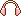
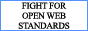
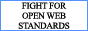

The webmaster
Is it weird to have two 'about me' pages on a single website?
I just wanted to also have a cute meet-the-webmaster version.
Hello!  I am Amalina, though I go by lina to most of my friends! I use she/her or they/them pronouns and I handcode everything on this website. I was born in the year of the rabbit, so I (naturally) adore rabbits.
I am Amalina, though I go by lina to most of my friends! I use she/her or they/them pronouns and I handcode everything on this website. I was born in the year of the rabbit, so I (naturally) adore rabbits.
I think you'll find a lot of insight about myself and my philosophies scattered around this website. For example, the Archives consist a lot of rambling about the things that inspire my web pages, my thought processes and the guiding principles behind why I created that part of this website in the first place. My bookshelf, on the other hand, houses my thoughts on books that have left an impact on me in some way or another. The things I collect in this are.na channel are often things I find important or aspire towards, and I think it's another useful way of trying to encapsulate who I am.
Nevertheless, let me tell you a bit more about myself. 
I am an avid collector of hobbies — from hand crafts such as sewing, drawing and writing, to more physical activities like parkour and roller-skating. If I could have all the time and resources in the world, I'd like to throw myself into learning every possible skill under the sun. There is such joy in learning to build something with your hands, or honing an ability and looking back at how far you've come.
I love making, looking at and buying art. I think life without art would be so dull, and I wish the artists of our world were valued more. I love escaping into new worlds with just a good book in my palms. I love singing, even if I'm out of tune. I love dancing in my bedroom alone with the lights all turned off. I think earth and nature in the everyday is beautiful, but we often miss it because we're lost in work or gripped by the stressors of our socioeconomic structures. I enjoy the tangibility of existence; being able to pause and fully experience the world with all my senses is something I'm grateful for everyday.
Question: What brings you love and joy?
Answer: The feeling of a soft breeze against my cheeks, carrying with it the birdsongs that ground me to the present.
I believe that we are all connected in some way, and it is our responsibility to care for each other. We have been taught to favour selfishness and ruthless competitiveness, but I think it is much braver and stronger of us when the act of caring and compassion is at the heart of how we encounter the world.
More things I love
A non-exhaustive list of things I love! Yes, I love liberally, but why should I not?
|
|
|
|
|  |
|
|
|
|
|
|
Buttons
Here are a collection of 88x31 buttons, reminiscent of the early web. Read about their history here.
")


 


")


- Find other cool sites and the webrings this site is part of at the bus stop.
- Find pixel cliques at the toybox.
Many thanks to
- asterism — heart bullet icon, plaid background
- lovecandied (now defunct) — bow & teardrop header, mushroom pixel art, butterfly pixel art, daisy and bow divider
- duckyfeet — rabbit emoticons
- greybeard font used
- this digitalocean tutorial — how to install custom fonts
- this css-tricks guide — how to splice border-image
All other pixels on this page by me. You're free to save & use them for non-commercial purposes. A link back somewhere on your page is highly appreciated if you do use them.